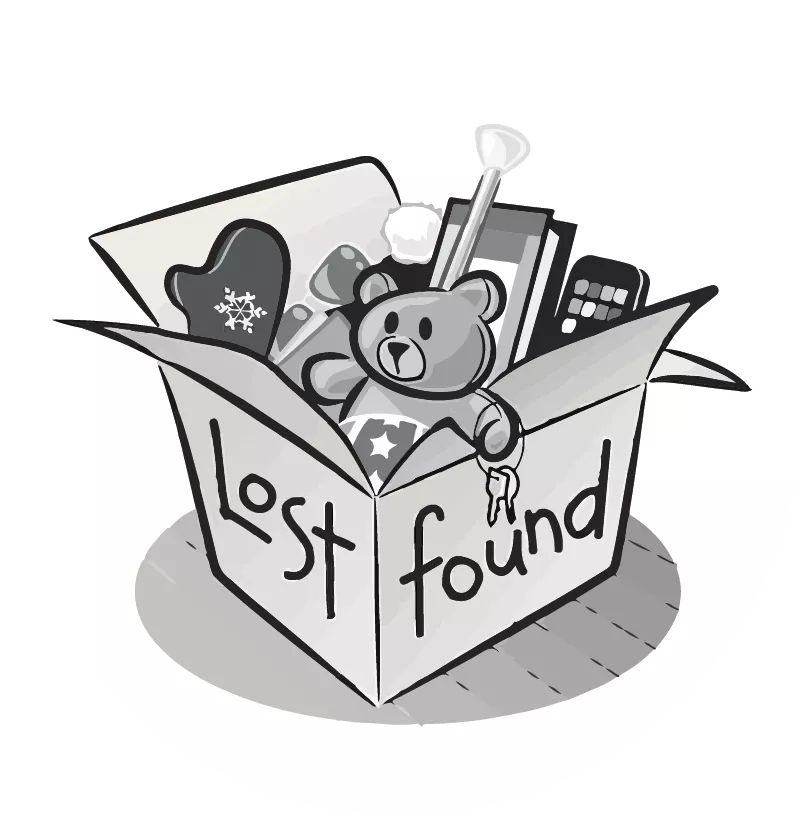
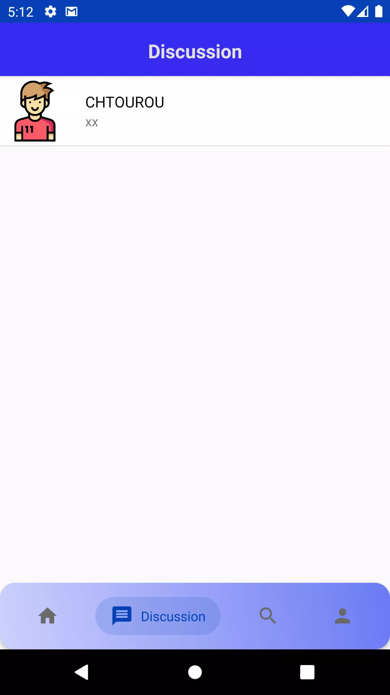
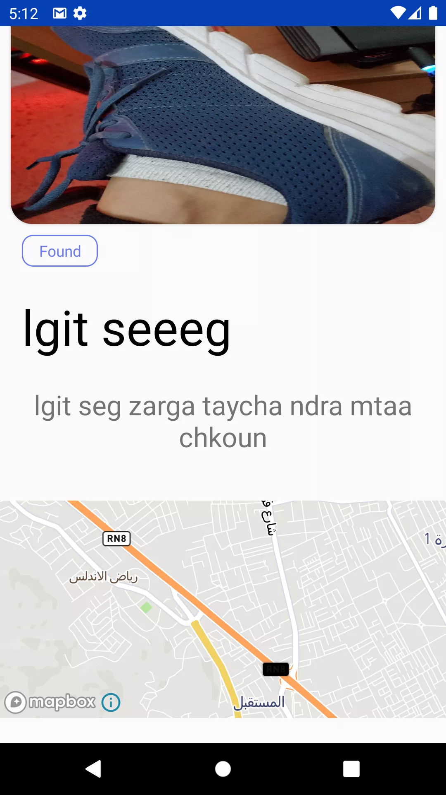
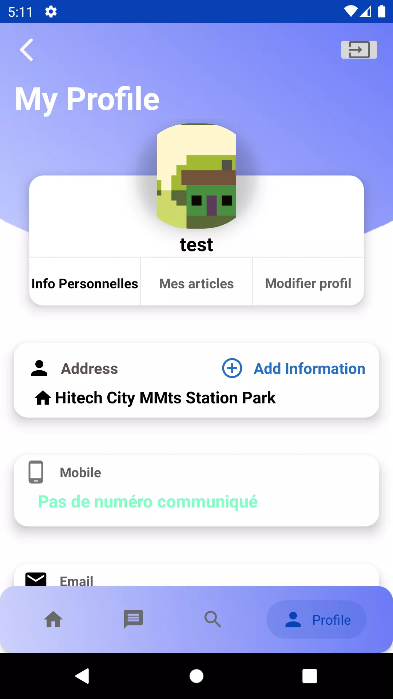
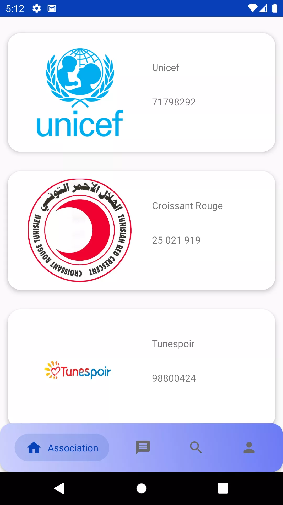
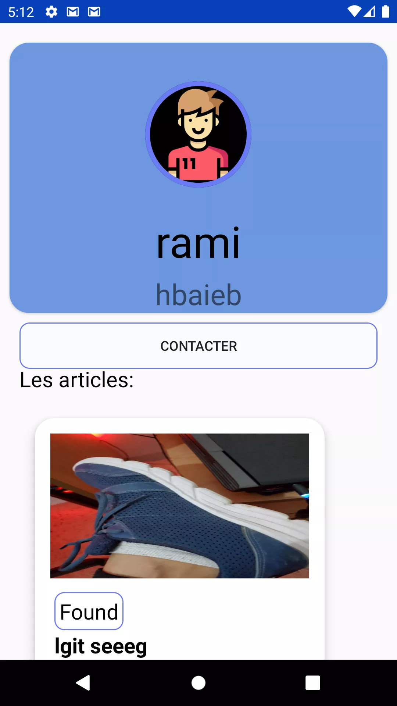
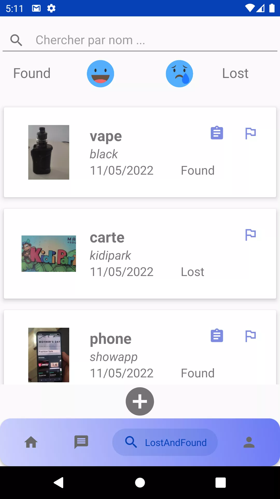

LOST_&_FOUND
Application mobile multi-plateforme pour retrouver vos objets perdus ou signaler ceux trouvés. Disponible sur iOS, Android et Huawei AppGallery — avec système de sécurité par question secrète et option de don caritatif.
// SUMMARY
Lost & Found aide les utilisateurs à signaler et retrouver des objets perdus. L'application intègre un système de sécurité avec question secrète, la géolocalisation pour limiter la recherche à une zone, et propose une fonctionnalité de don caritatif lorsque l'objet reste introuvable.
// KEY_FEATURES
- Signalement d'objet perdu ou trouvé
- Recherche filtrée et géolocalisation
- Question secrète comme système de sécurité
- Option de don caritatif
- Disponible sur iOS, Android et Huawei AppGallery
- Applications natives avec API Node.js partagée
// STACK
// TIMELINE
2022
// STATUS
● LIVE ON 3 STORES
// ARCHITECTURE
Architecture multi-plateforme avec une API Node.js partagée entre clients iOS et Android.
// MOBILE_SHOWCASE
> Interface intuitive sur iOS et Android





